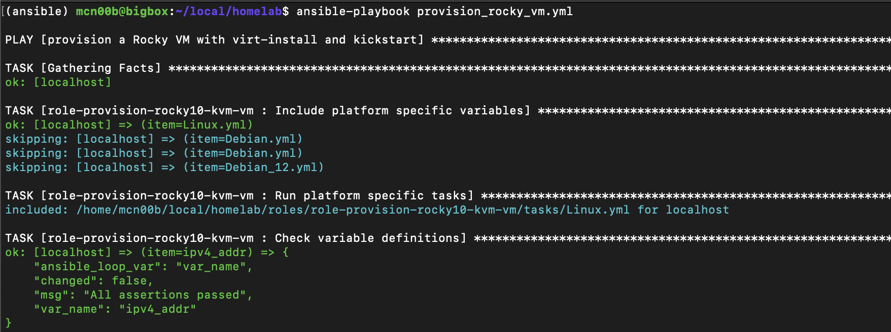
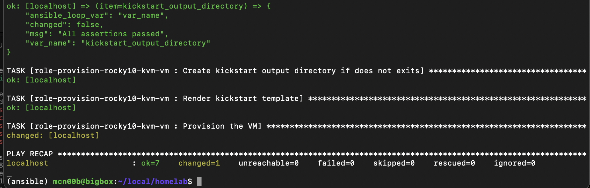
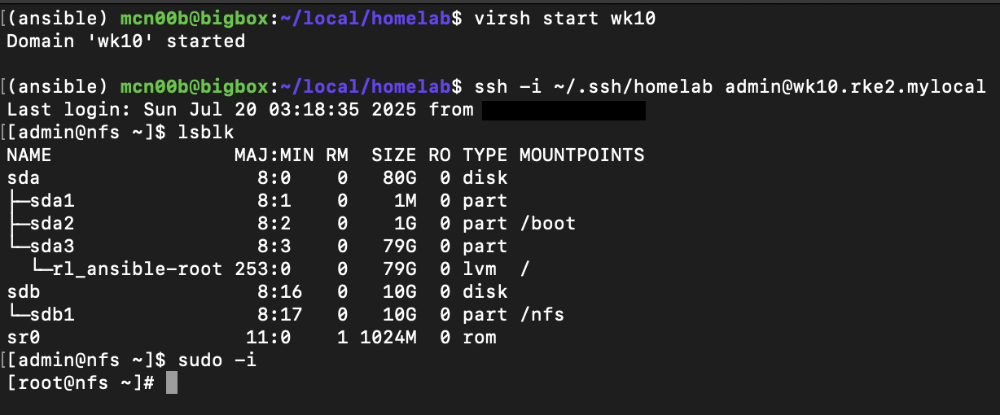

Automating Rocky Linux VM Provisioning with Ansible on KVM Hypervisor
Intro
I absolutely love KVM hypervisor! It’s free and has a great CLI interface which makes it easier to automate things.
It also comes with a very powerful virt-install utility,
which eliminates the need to use third-party tools like Packer.
When combined with tools like Ansible and kickstart, virt-install makes
VM provisioning a breeze.
Gotchas to Keep in Mind
-
Keep in mind the qemu connection type and current user group memberships. A user must be a member of
libvirtgroup in order to leverage system connections without root privileges.virt-install --connect qemu:///session # local user session virt-install --connect qemu:///system # system wide session -
Make sure you have write access to the directory where the virtual drive will be created. File access control list (FACL) is one way to manage it.
# mkdir /var/lib/libvirt/images/test # setfact -R -m u:<your-user>:rwX -
Make sure user
libvirt-qemuhas read permissions to the location where the OS ISO is stored.
Let’s Provision A Rocky 10 VM
Prerequisites/System Overview
- Host OS: Debian 12
- RAM: enough for your needs
- Storage: enough for your needs
- CPU Cores: the more the better
- current user account is a part of
libvirtgroup# usermod -G libvirt -a <your_user>
Ansible setup
-
Note conventions:
$: normal user shell>: Python venv shell- all Ansible commands are run from Python venv
-
Ansible isntalled on the host via pip
$ python3 -m venv ~/ansible_env $ source ~/ansible_env/bin/acivate > pip install --upgrade pip > pip install ansible ansible-dev-tools -
install the role (wihtout
-p, the default install location is:~/.ansible/roles)mkdir roles ansible-glaxy role install -p roles git+https://github.com/vladstechblog/role-provision-rocky10-kvm-vm.git -
create a playbook to run the role; see example in the role README
-
at this point your directory structure should look like this:
. |-- my_playbook_to_invoke_role.yml `-- roles `-- role-provision-rocky10-kvm-vm -
run the playbook

-
and wait for it to finish

-
start vm and log into it
